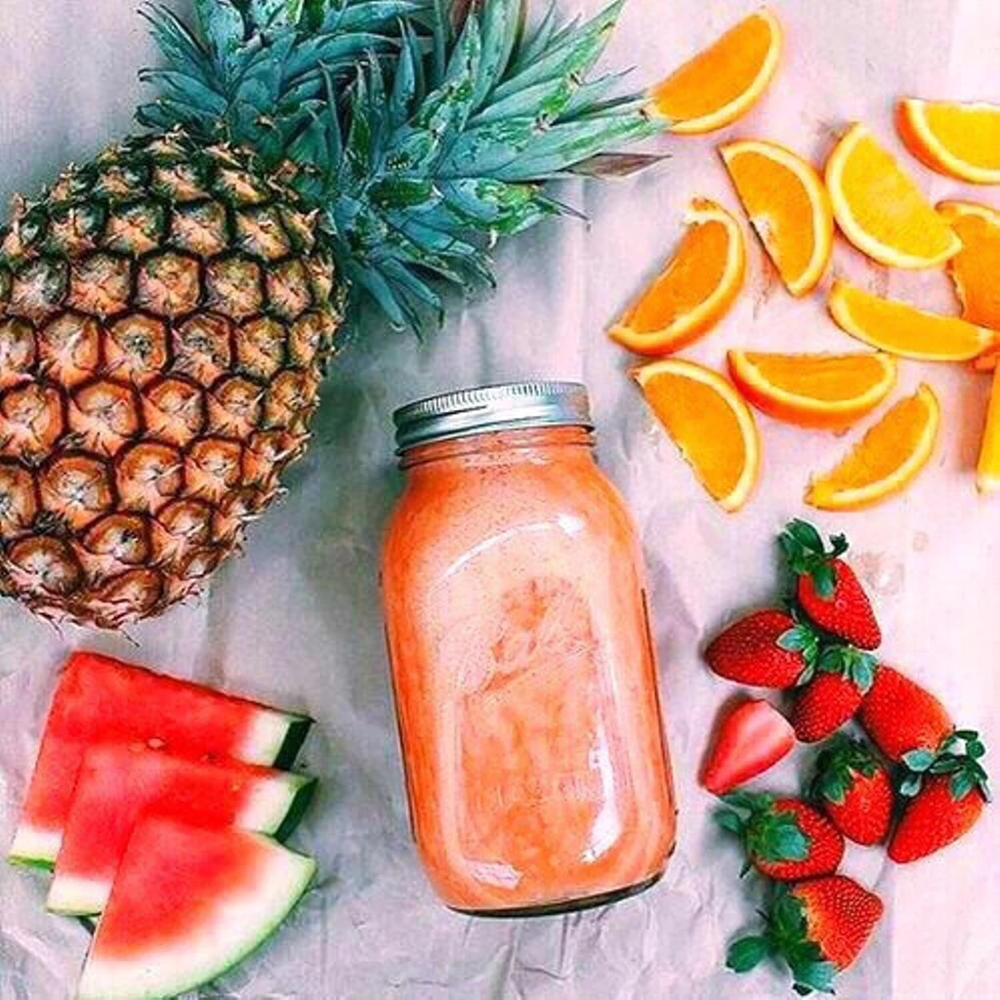

Welcome into nutrition!
First of all, I am really glad you came to this page. Congratulations! This means that you are interested in your health condition. I prepared for you some articles that represents a sum of informations that I achieved after more than 3 years of practicing workouts.
Maybe you're asking: " Do I have to go outside and train my muscles too ? "
The answer is : NO.
It's not a must. Nutrition is the most important part of a regular training routine, but that doesn't mean that you can't take care of yourself in particular ways. Simply the idea of knowing what are you eating is a problem solver.
You will have the answers for questions like:
- Why can't I fall asleep?
- Why am I feeling so low?
- Why I gain fat even if I do my workouts?
These questions are just the top of the iceberg. Knowledge is a very powerful weapon but you will trully feel its power only if you put it in practice.